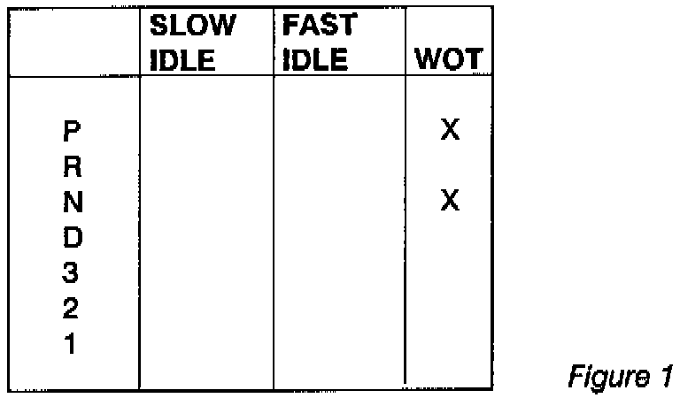

A/T - How To Use A Pressure Gauge
BULLETIN : # 078SUBJECT: Pressure Gauge
APPLICATION: Misc.
DATE: November 1991
HOW TO USE A PRESSURE GAUGE
A significant number of calls we receive involve improper pressures, so we need to use a pressure gauge when diagnosing problems.
Using a pressure gauge can seem like a formidable task. The reason most people do not use a pressure gauge is because they do not see the value in using one. Technicians do not see the value because the gauge readings do not tell them how to fix the problem. This article will attempt to show the technician how to interpret pressure gauge readings so the technician can find the fix to the problem.

It is best to start pressure tests with mainline pressure. Mainline pressure should be checked in each range: P, R, N, D, 3, 2, 1. Each range, except Park and Neutral, should be checked under three conditions: Slow idle, fast idle, and wide open throttle. A form, as in figure 1 should be made to record the readings.
If all pressures are within specification at slow idle then the pump and pressure regulator are functioning properly.
If all pressures are low at slow idle, it indicates a potential problem in the pump, pressure regulator, filter, low fluid, or internal leakage. To help verify where the problem is, check pressures at fast idle. If all the pressures now read normally, it usually indicates a worn pump but the problem could still be internal leaks.
Internal leaks will usually show up in a particular range. For example a forward clutch leak would have normal pressure in Park, Reverse and Neutral but have low pressure in all forward ranges. A direct clutch leak will show a pressure drop when the transmission shifts to third and low pressure in reverse because in most cases, the direct clutch is on in third and reverse.
A restricted filter will usually show up as a gradual pressure drop at higher engine RPM because the filter cannot pass as much fluid as the pump is trying to draw.
A stuck pressure regulator valve will show up as fixed line pressure which means the same pressure all the time. The pressure may vary with engine RPM which means low pressure at slow RPM and higher pressure at higher RPM. There will be no boost in pressure from the TV or modulator system and no reverse boost.
If pressures are high at slow idle it indicates a pressure regulator or throttle pressure problem. On most cars, the modulator controls throttle pressure. If the transmission has a throttle pressure tap, it will tell you if the throttle pressure circuit is the problem. On GM units without a throttle pressure tap, remove the TV plunger. If line pressure is now normal then it's a TV problem, if not it's a pressure regulator problem.
Pressures also need to be checked at stall or wide open throttle (WOT). When doing a stall test, always observe safety precautions such as checking for broken mounts or bad brakes. Testing should always be done under operating conditions. To do a stall test, put the selector in the range to be tested and with one foot firmly on the brake, press the accelerator to the floor then note your pressure reading. Some technicians will pull the vacuum line off or pull the TV cable with the engine at fast idle. That is not operating conditions and will not detect a problem of trapped vacuum or a cable problem.
If all pressure at stall are low, then you should pull the TV cable to maximum or disconnect the vacuum line. If the pressures are now OK, the problem is in the cable or vacuum system. If the pressures are still low, then the problem is in the pump or control system.
If all pressures at stall are high, then look at the idle pressures. If the idle pressures are also high then this could be a pressure regulator or throttle system problem. If idle pressures are normal then the problem is in just the throttle system.
The reverse stall test is also a maximum pump output test. If you suspect a weak pump then this test will help find it. Often this will show up as low pressure at reverse stall but all other pressures including idle will be normal. If a person wanted to become really proficient with a pressure gauge they should first put a pressure gauge on their own vehicle and leave it there for exactly one week. Every time they drive the car they should watch the gauge. After one week, they should then put the pressure gauge on every single car in the shop that DOES NOT have a problem. Don't use the gauge on cars WITH problems yet. After 30 days of using a gauge on units that work properly, they can then start using the gauge on units with problems. The technician is accustomed to normal readings, abnormal readings will stand out like a sore thumb.
To fix today's transmissions, every professional technician must be proficient in the use of a pressure gauge. The only way to gain this proficiency is to use the pressure gauge daily. Practice makes perfect.